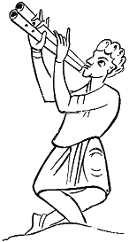
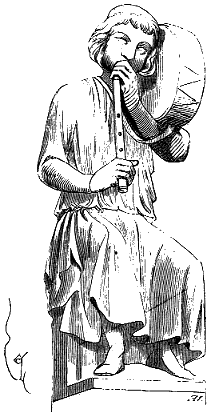
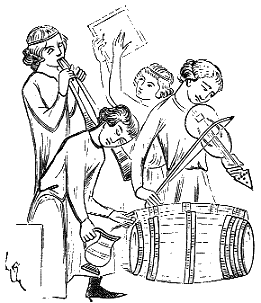
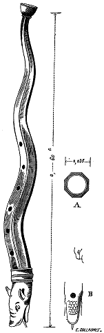

Eugène VIOLLET le DUC
Dictionnaire raisonné du mobilier.|
 Figure 1 |
FLUTE, s. f. (fluste, fleute, flahutiele, flajos, flajole). Dans les manuscrits qui datent du Xe siècle, on voit souvent la flûte double figurée, et cet instrument se retrouve jusque vers la fin du XIIIe siècle. Voici, figure 1, un joueur de flûte double à deux embouchures, représenté sur une vignette du Xe siècles1, et, figure 2, une flûte double dont les corps sont unis par une frette et qui se termine par un seul pavillon2. L'un des tubes de ce dernier instrument est percé de cinq trous, l'autre de six, mais le dessinateur a-t-il supposé l'un des trous bouché par le petit doigt de la main droite ? Cependant si grossières que soient les vignettes qui ornent cet antiphonaire, l'artiste semble, dans toutes, avoir eu la prétention d'indiquer exactement, au moins, le nombre des cordes et le nombre des trous sur les divers instruments qu'il reproduit. |
||||||
La flûte simple et la flûte double datent d'une haute antiquité. Dans les débris de l'époque gauloise et gallo-romaine, on trouve souvent des fragments de flûtes d'os, ce qui permet de supposer que nos aïeux prisaient fort cet instrument. Les jongleurs, les ménestrels, jouaient de la flûte pour accompagner les danses, les tours de leurs confrères, et aussi lorsqu'il s'agissait de précéder certains personnages ou des gens qui allaient se réjouir quelque part.

Figure 3Les ménestrels, en jouant de la flûte, s'accompagnaient souvent d'un tambourin maintenu sur l'épaule gauche au moyen d'une courroie, et qu'ils faisaient résonner sourdement avec la tête. Une des statues de la façade de la maison des Musiciens à Reims, reproduit un de ces jongleurs (fig. 3)3. Cette manière de jouer de la flûte avec accompagnement de tambourin s'est perpétuée jusqu'au commencement du siècle dans les campagnes. La flûte que donne la figure 3 est percée de quatre trous, très probablement ; la main droite paraissant boucher le quatrième.
Il paraîtrait qu'au XIIIe siècle, les ménestrels jouaient aussi de la flûte double dont les tubes étaient de longueurs inégales. C'est du moins ce que ferait supposer une vignette très intéressante d'un manuscrit de la Bibliothèque impériale4 (fig. 4). Cette petite peinture montre trois ménestrels : l'un joue de la vielle ou de la viole ; le second embouche deux flûtes d'inégales longueurs, à large pavillon comme nos clarinettes ; le troisième frappe sur un tambourin carré, qui n'est autre chose qu'une peau tendue sur un châssis, pendant qu'un quatrième personnage tire du vin pour rafraîchir les musiciens.

Figure 4
 Figure 5 Au XVe siècle, on se servait de flûtes de cuir bouilli qui faisaient le dessus de l'instrument appelé serpent en ces derniers temps, et dont on usait non seulement dans les églises, mais aussi dans les concerts profanes (voy. SERPENT). M. Fau, qui possède une collection d'instruments de musique anciens, recueillis avec un goût parfait et une connaissance rare de ces objets, a bien voulu nous permettre d'en dessiner quelques- uns, parmi lesquels se trouve une de ces flûtes (fig. 5). Le corps de l'instrument, ondulé, est complètement façonné en cuir bouilli d'un beau noir. La tête seule, qui forme pavillon, est peinte. La section du tube est un octogone (voy. en A) de 0m,035 de diamètre au point le plus fort. Le dessous de la tête (voy. en B) est percé d'un trou. Six trous sont percés sur le dessus du tube, et un seul en C au-dessous. L'embouchure, qui n'existe plus, était d'ivoire et hémisphérique (voy. en D). L'instrument porte 0m,60 de longueur.
La flûte traversière paraît avoir été en usage dès le milieu du XIVe siècle, puisque Eustache Deschamps la mentionnes5.
A en croire Eustache Deschamps, la flûte, le flageolet, étaient fort en honneur de son temps, et la plupart des instruments joués par les ménétriers étaient alors relativement peu prisés.
A la fin du XVe siècle, dans les concerts, on jouait d'une grande flûte qu'on appelait flûte bruyante, et qui avait quelques rapports avec notre grande clarinette, sauf les clefs.
Notes :
(1) Bible, fonds de Saint- Germain, latin, Biblioth. impér. (Xe siècle).
(2) Antiphonaire provenant de l'abbaye Saint Martial de Limoges (IIe siècle), Bibliothèque impér.
(3) Milieu du XIIIe siècle.
(4) Ancien fonds Saint-Germain, no 37 (XIIIe siècle).
(5) Sous le nom de fleuthe traversaine.